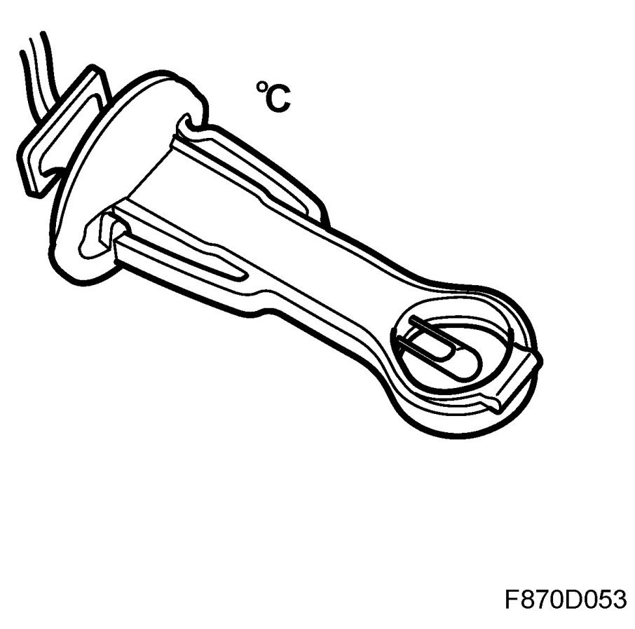
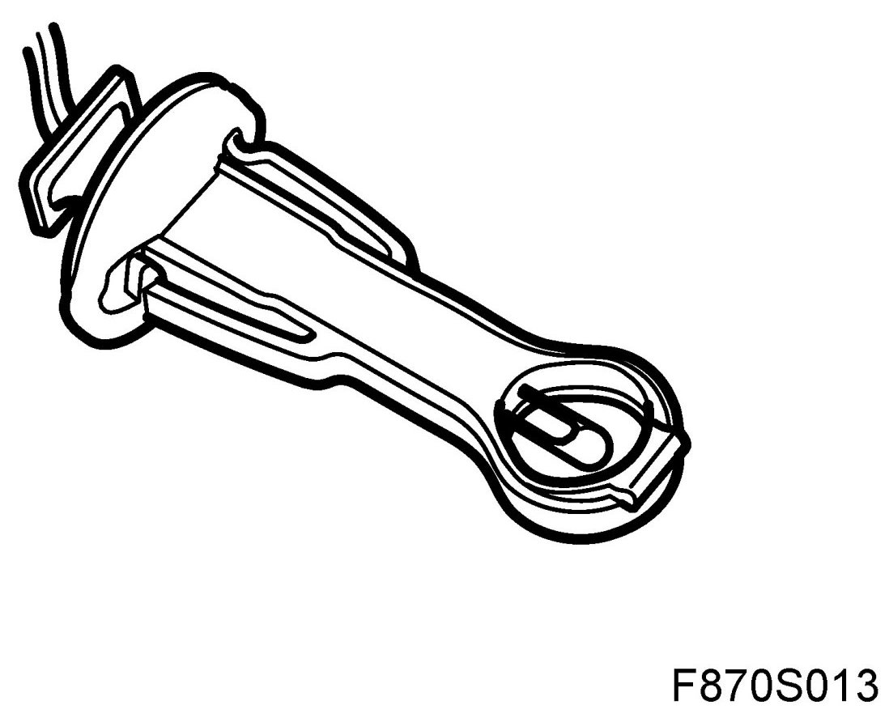
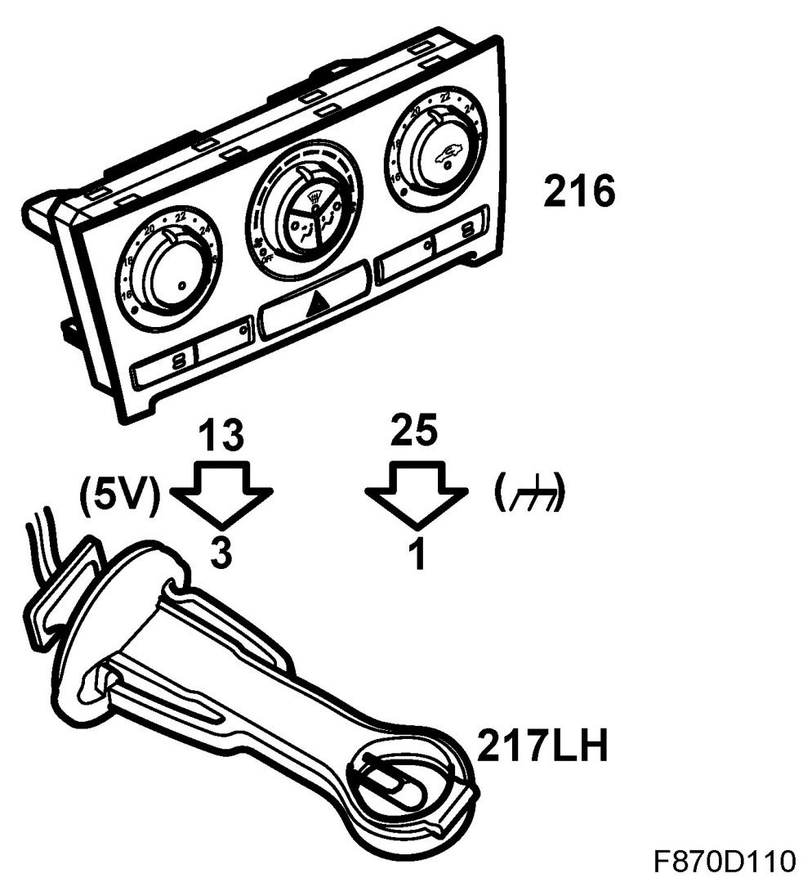
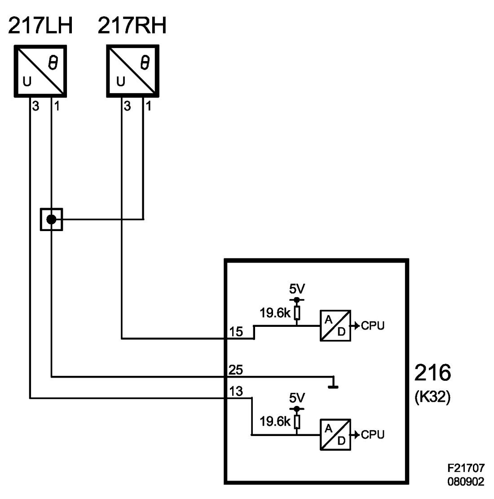

Temperature Sensor, Mixed Air, Floor, Left (217LH)
Temperature Sensor, Mixed Air, Floor, Left (217LH)
Location
Temperature sensor, mixed air, floor, left (217LH).
Main task
The sensor provides information on the current temperature of the air passing the duct through the left-hand floor vent.

Type
The NTC sensor is located in a bracket.

Connect
Sensor pin 1 has an internal ACC unit ground connection via pin 25 (K32) and sensor pin 3 receives a 5 V feed from pin 13 (K32) via an integrated 19.6 kOhm resistor in the ACC unit.


NTC resistor characteristics allow the resistance to decrease as the temperature rises. This means that the voltage fed over the resistor also decreases as the temperature rises.
The voltage level from the A/D sensor is converted and is then available in digital form. The digital voltage level is then converted to a temperature value which is stored in the ACC unit operating memory. Voltage levels near 0 V or 5 V are determined as circuit faults.